Sounds human
Hi-Fi cloud voices with real emotion, tone and character. Pick Stable, Natural or Expressive — or fine-tune every take.
English, Ukrainian, German, Portuguese, Arabic
New Podcasts with several AI hosts See how
Vexel turns articles, documents and ideas into natural speech — or a full podcast with several hosts. A calm, native workspace, right on your Mac.
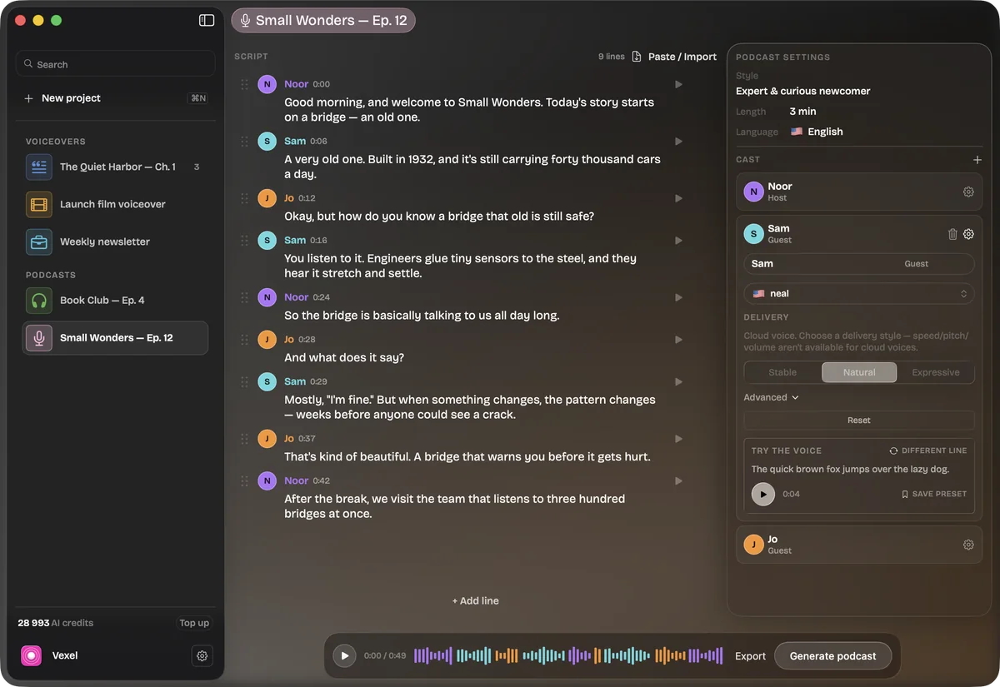
Why Vexel
Hi-Fi cloud voices with real emotion, tone and character. Pick Stable, Natural or Expressive — or fine-tune every take.
English, Ukrainian, German, Portuguese, Arabic
No extra sign-up — your Setapp account covers it. The audio you make stays on your Mac until you export it. Need to go fully offline? Use the voices built into macOS.
Anonymous analytics · off with one switch
A native app, not a browser tab. Keyboard-first, glassy and quiet, with the interface in eight languages — including full right-to-left Arabic.
⌘↩ generates, from anywhere
How Vexel works for you
Podcasts
Give Vexel an article or just an idea. Make with AI writes a natural conversation between several hosts, casts a voice for each, and lets you edit every line before you hit play.
Up to 20 speakers and 500 lines per episode · AI scripts use Setapp AI+
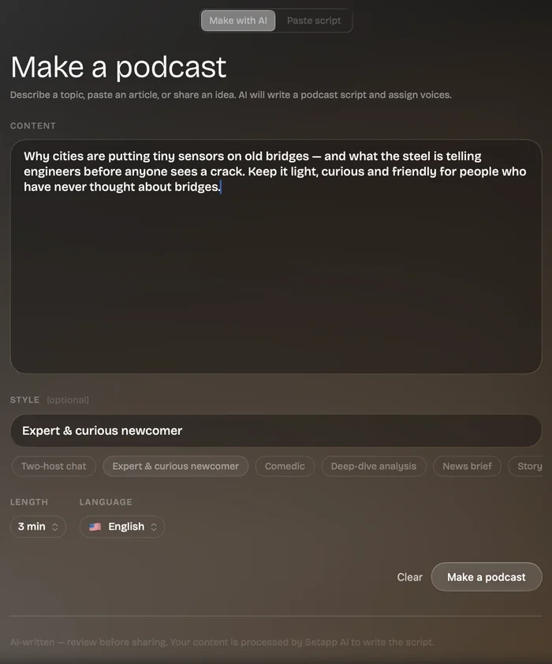
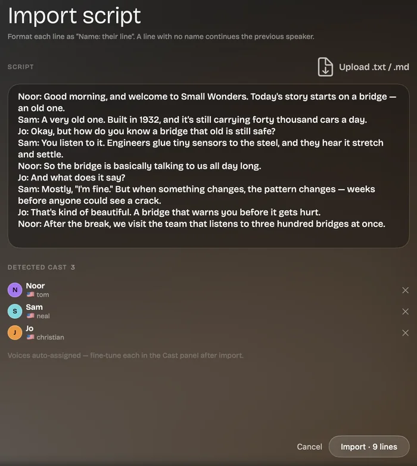
Voices
69 Hi-Fi cloud voices give you the most natural sound, in five languages and many accents. The voices already on your Mac are free and work offline. Search, filter by language, and preview any voice with one click.
Offline? Switch to Mac voices — no internet needed
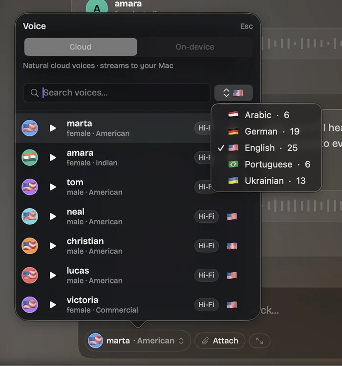
Add text
Bring a chapter, a report or an email. Vexel opens seven document formats, notices the language on its own, and highlights each word as it's read.
⌘⌥⇧V pastes clean text, without formatting
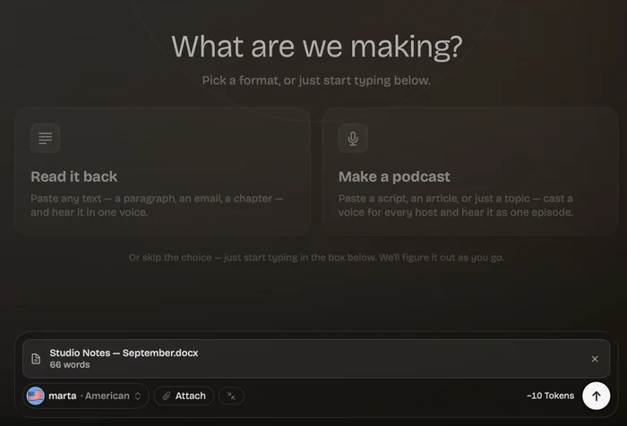
Tune, trim, compare
Start with Stable, Natural or Expressive. Nudge simple sliders, or open Advanced for full control. Trim the edges, then compare takes — every one is saved in the project.
⌘↩ makes a new take — the old one stays in history
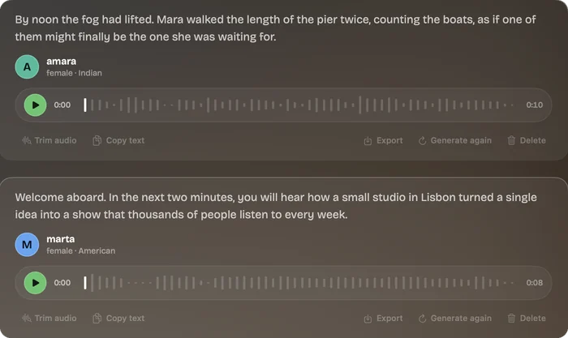
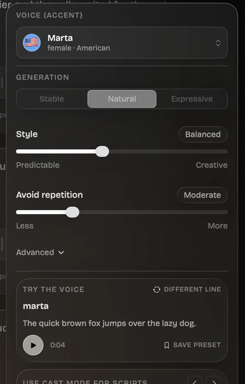
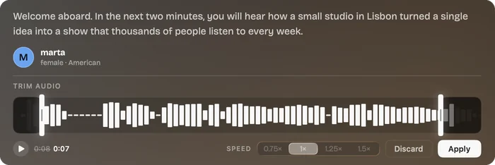
AI agents & automation
Turn on automation and Claude — or any agent that speaks MCP — can list voices, create projects and batch-generate audio from your scripts and files. There's a command-line tool too.
list_voiceslist_projectscreate_projectgenerate_audio# one audio file per line of the script
$ vexel generate --project morning-briefing \
--voice noor --text-file lines.txt \
--out ./audio
✓ 12 lines queued
✓ Done · 12 files in ./audio
$ vexel health
✓ Vexel is running · automation onVoices powered by
Vexel's Hi-Fi cloud voices come from Respeecher — the voice team behind major film, TV and game projects.
Lucasfilm · Disney+
Recreated the voice of young Luke Skywalker.
Hear it in action
Real clips from Vexel's voice library. Tap a voice to hear it — then pick the one that fits your story.
How it works
Vexel is part of your Setapp membership — no extra purchase and no separate Vexel account.
Open Setapp, find Vexel and click Install. New to Setapp? Start with a free trial.
Paste, dictate or drop a document — or give it a topic. Choose from 240+ voices.
Preview, trim and compare takes, then export a WAV. Cloud voices use your Setapp AI+ credits.
The usual way vs Vexel
Most text-to-speech lives in a browser tab behind a sign-up. Vexel lives on your Mac — with 240+ voices to choose from.
| What you need | Typical web tool | Vexel |
|---|---|---|
| Voices to choose from | Varies by plan | 240+ in one list |
| Sign-ups needed | A new account per tool | Your Setapp one |
| Work offline | No | With Mac voices |
| Open PDF, EPUB, DOCX | Often limited | 7 formats |
| Keep every take | Varies | Per project |
| Podcast with several hosts | Rare | Built in |
| Access for AI agents | Cloud API keys | Local CLI + MCP |
Stories
Real stories from early users are on their way.
—Hero metric, e.g. hours saved per episode
Placeholder for a short quote from a podcaster about going from a topic to a finished episode.
—Hero metric
Placeholder for a writer who listens back to drafts.
—Hero metric
Placeholder for a developer using the MCP server.
Get Vexel
Requirements: macOS 15 Sequoia or later · Apple Silicon (M1 or newer) · Internet for Hi-Fi voices & AI scripts · Exports WAV · v1.5.0, 27 MB
They power the servers behind Hi-Fi voices and AI scripts — so results come fast and sound great.
Setapp is MacPaw's app subscription: a big library of Mac apps under one account — Vexel included. Getting started takes three steps.
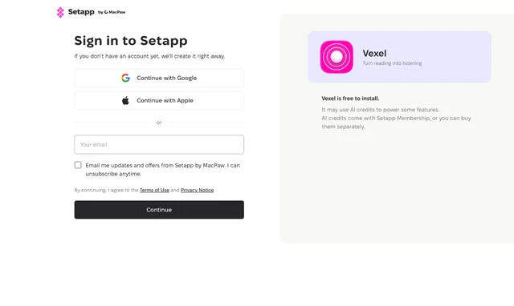
That's where the Try free button takes you. It takes about a minute.
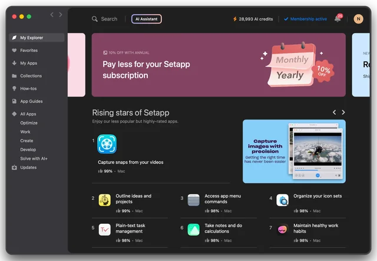
One small app that installs and updates everything else.
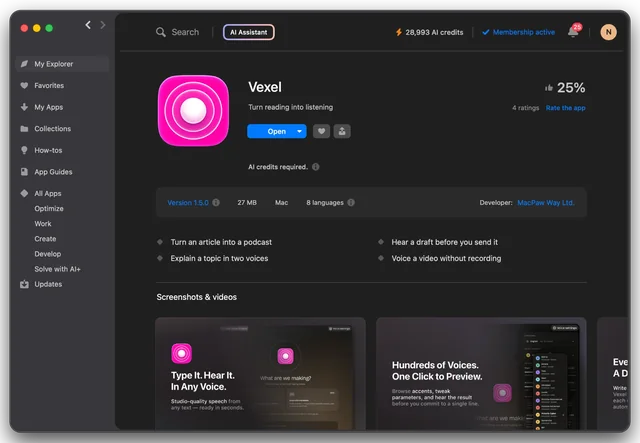
It's in your Setapp library, and the same account holds your AI credits.
Already on Setapp? Search for Vexel in the Setapp app, or open its Setapp page. More about Setapp.
No. Vexel is text-to-speech: you give it text, it gives you speech. It doesn't change a recorded voice in real time.
Not today. You choose from the Hi-Fi cloud voices and the voices installed on your Mac.
Yes — with the voices built into macOS. Hi-Fi cloud voices and Make with AI need an internet connection.
PDF, EPUB, DOCX, Markdown, RTF, RTFD and TXT. You can also paste text or dictate it.
WAV audio — a single voice, or a full multi-host episode in one file.
69 Hi-Fi cloud voices in five languages: English (25, with several accents), German (19), Ukrainian (13), Arabic (6) and Brazilian Portuguese (6). On top of that, Vexel can use the 170+ free voices built into macOS, in 38 languages.
The app itself is available in English, German, Spanish, French, Portuguese, Ukrainian, Japanese and Arabic.
You only need your Setapp account — Vexel has no separate sign-up. Audio you make is stored on your Mac and only leaves when you export it.
When you use a cloud voice, the text is sent securely to be voiced. Analytics are anonymous, never include your text or audio, and can be turned off in Settings.
Macs with Apple Silicon (M1 or newer) running macOS 15 Sequoia or later.
Turn reading into listening — a chapter, a briefing, a whole show.
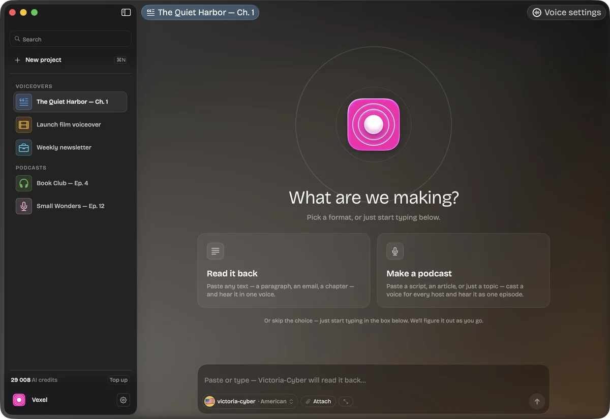